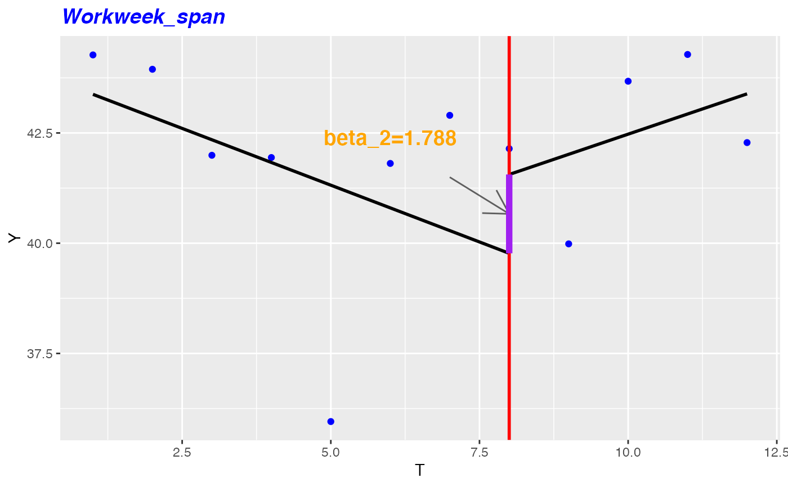

R/create_ITSA.R
create_ITSA.Rdr lifecycle::badge('experimental')
This function implements ITSA method described in the paper 'Conducting interrupted time-series analysis for single- and multiple-group comparisons', Ariel Linden, The Stata Journal (2015), 15, Number 2, pp. 480-500
This function further requires the installation of 'sandwich', 'portes', and
'lmtest' in order to work. These packages can be installed from CRAN using
install.packages().
create_ITSA( data, before_start = min(as.Date(data$Date, "%m/%d/%Y")), before_end, after_start, after_end = max(as.Date(data$Date, "%m/%d/%Y")), ac_lags_max = 7, return = "table" )
| data | Person Query as a dataframe including date column named |
|---|---|
| before_start | Start date of 'before' time period in MM/DD/YYYY format as character type. Before time period is the period before the intervention (e.g. training program, re-org, shift to remote work) occurs and bounded by before_start and before_end parameters. Longer period increases likelihood of achieving more statistically significant results. Defaults to earliest date in dataset. |
| before_end | End date of 'before' time period in MM/DD/YYYY format as character type. |
| after_start | Start date of 'after' time period in MM/DD/YYYY format as character type. After time period is the period after the intervention occurs and bounded by after_start and after_end parameters. Longer period increases likelihood of achieving more statistically significant results. Defaults to date after before_end. |
| after_end | End date of 'after' time period in MM/DD/YYYY format as character type. Defaults to latest date in dataset. |
| ac_lags_max | maximum lag for autocorrelation test. Default is 7 |
| return | String specifying what output to return. Defaults to "table". Valid return options include:
|
This function uses the additional package dependencies 'sandwich', 'lmtest', and 'portes'. Please install these separately from CRAN prior to running the function.
Other Flexible Input:
period_change()
Aleksey Ashikhmin alashi@microsoft.com
# \donttest{ # Returns summary table create_ITSA( data = sq_data, before_start = "11/03/2019", before_end = "12/15/2019", after_start = "12/29/2019", after_end = "1/26/2020", ac_lags_max = 7, return = "table")#> #> #>#> metric_name beta_2 beta_3 beta_2_pvalue #> 1 Workweek_span 1.788 0.972 0.477 #> 2 Meetings_with_skip_level 0.010 0.008 0.623 #> 3 Meeting_hours_with_skip_level 0.020 0.000 0.159 #> 4 Generated_workload_email_hours 1.151 0.776 0.434 #> 5 Generated_workload_email_recipients 17.236 11.739 0.440 #> 6 Generated_workload_instant_messages_hours 0.079 0.049 0.388 #> 7 Generated_workload_instant_messages_recipients 4.222 2.819 0.434 #> 8 Generated_workload_call_hours 0.918 -0.374 0.204 #> 9 Generated_workload_call_participants 0.961 -0.415 0.201 #> 10 Generated_workload_calls_organized 0.493 -0.213 0.201 #> 11 External_network_size 0.289 0.164 0.006 #> 12 Internal_network_size 8.445 4.335 0.000 #> 13 Networking_outside_company 0.073 0.048 0.055 #> 14 Networking_outside_organization 0.008 0.001 0.000 #> 15 After_hours_meeting_hours 0.167 0.087 0.405 #> 16 Open_1_hour_block -1.311 -0.546 0.337 #> 17 Open_2_hour_blocks -0.729 -0.341 0.403 #> 18 Total_focus_hours -1.449 -0.709 0.406 #> 19 Low_quality_meeting_hours 1.087 0.530 0.327 #> 20 Total_emails_sent_during_meeting 1.492 0.772 0.311 #> 21 Meetings 1.431 0.690 0.384 #> 22 Meeting_hours 1.271 0.545 0.335 #> 23 Conflicting_meeting_hours 1.033 0.404 0.228 #> 24 Multitasking_meeting_hours 0.192 0.109 0.317 #> 25 Redundant_meeting_hours__lower_level_ 0.019 0.001 0.193 #> 26 Redundant_meeting_hours__organizational_ 0.634 0.309 0.279 #> 27 Time_in_self_organized_meetings 0.237 0.137 0.467 #> 28 Meeting_hours_during_working_hours 1.090 0.459 0.338 #> 29 Generated_workload_meeting_attendees 1.148 0.531 0.427 #> 30 Generated_workload_meeting_hours 0.742 0.447 0.492 #> 31 Generated_workload_meetings_organized 0.272 0.133 0.437 #> 32 Manager_coaching_hours_1_on_1 -0.004 0.012 0.906 #> 33 Meetings_with_manager 0.715 0.372 0.395 #> 34 Meeting_hours_with_manager 0.632 0.332 0.359 #> 35 Meetings_with_manager_1_on_1 0.042 0.013 0.240 #> 36 Meeting_hours_with_manager_1_on_1 0.036 0.013 0.343 #> 37 After_hours_email_hours 0.178 0.125 0.481 #> 38 Emails_sent 5.452 3.619 0.424 #> 39 Email_hours 1.211 0.804 0.422 #> 40 Working_hours_email_hours 0.255 0.162 0.378 #> 41 After_hours_instant_messages 0.034 0.021 0.410 #> 42 Instant_messages_sent 8.267 5.076 0.380 #> 43 Instant_Message_hours 0.080 0.049 0.379 #> 44 Working_hours_instant_messages 0.046 0.028 0.356 #> 45 After_hours_collaboration_hours 0.345 0.212 0.444 #> 46 Collaboration_hours 2.482 1.348 0.380 #> 47 Collaboration_hours_external 0.382 0.309 0.496 #> 48 Working_hours_collaboration_hours 1.345 0.620 0.346 #> 49 After_hours_in_calls 0.234 -0.090 0.138 #> 50 Total_calls 1.452 -0.620 0.196 #> 51 Call_hours 1.934 -0.758 0.160 #> 52 Working_hours_in_calls 1.498 -0.649 0.164 #> 53 Layer -1.000 -1.000 -1.000 #> 54 HourlyRate -1.000 -1.000 -1.000 #> beta_3_pvalue AR_flag #> 1 0.092 FALSE #> 2 0.225 FALSE #> 3 0.982 FALSE #> 4 0.046 FALSE #> 5 0.047 FALSE #> 6 0.042 FALSE #> 7 0.054 FALSE #> 8 0.334 FALSE #> 9 0.287 FALSE #> 10 0.288 FALSE #> 11 0.000 TRUE #> 12 0.000 TRUE #> 13 0.000 TRUE #> 14 0.132 TRUE #> 15 0.071 FALSE #> 16 0.087 FALSE #> 17 0.086 FALSE #> 18 0.077 FALSE #> 19 0.066 FALSE #> 20 0.058 FALSE #> 21 0.085 FALSE #> 22 0.082 FALSE #> 23 0.072 FALSE #> 24 0.083 FALSE #> 25 0.738 FALSE #> 26 0.036 FALSE #> 27 0.087 FALSE #> 28 0.089 FALSE #> 29 0.122 FALSE #> 30 0.080 FALSE #> 31 0.111 FALSE #> 32 0.140 FALSE #> 33 0.070 FALSE #> 34 0.055 FALSE #> 35 0.154 FALSE #> 36 0.130 FALSE #> 37 0.058 FALSE #> 38 0.044 FALSE #> 39 0.043 FALSE #> 40 0.035 FALSE #> 41 0.053 FALSE #> 42 0.040 FALSE #> 43 0.041 FALSE #> 44 0.033 FALSE #> 45 0.060 FALSE #> 46 0.057 FALSE #> 47 0.042 FALSE #> 48 0.073 FALSE #> 49 0.279 FALSE #> 50 0.296 FALSE #> 51 0.304 FALSE #> 52 0.273 FALSE #> 53 -1.000 FALSE #> 54 -1.000 FALSE #> error_warning #> 1 #> 2 #> 3 #> 4 #> 5 #> 6 #> 7 #> 8 #> 9 #> 10 #> 11 #> 12 #> 13 #> 14 #> 15 #> 16 #> 17 #> 18 #> 19 #> 20 #> 21 #> 22 #> 23 #> 24 #> 25 #> 26 #> 27 #> 28 #> 29 #> 30 #> 31 #> 32 #> 33 #> 34 #> 35 #> 36 #> 37 #> 38 #> 39 #> 40 #> 41 #> 42 #> 43 #> 44 #> 45 #> 46 #> 47 #> 48 #> 49 #> 50 #> 51 #> 52 #> 53 Warning: essentially perfect fit: summary may be unreliable; lm_train_success=FALSE #> 54 Warning: essentially perfect fit: summary may be unreliable; lm_train_success=FALSE# Returns list of plots plot_list <- create_ITSA( data = sq_data, before_start = "11/03/2019", before_end = "12/15/2019", after_start = "12/29/2019", after_end = "1/26/2020", ac_lags_max = 7, return = 'plot') # Extract a plot as an example plot_list$Workweek_span# }